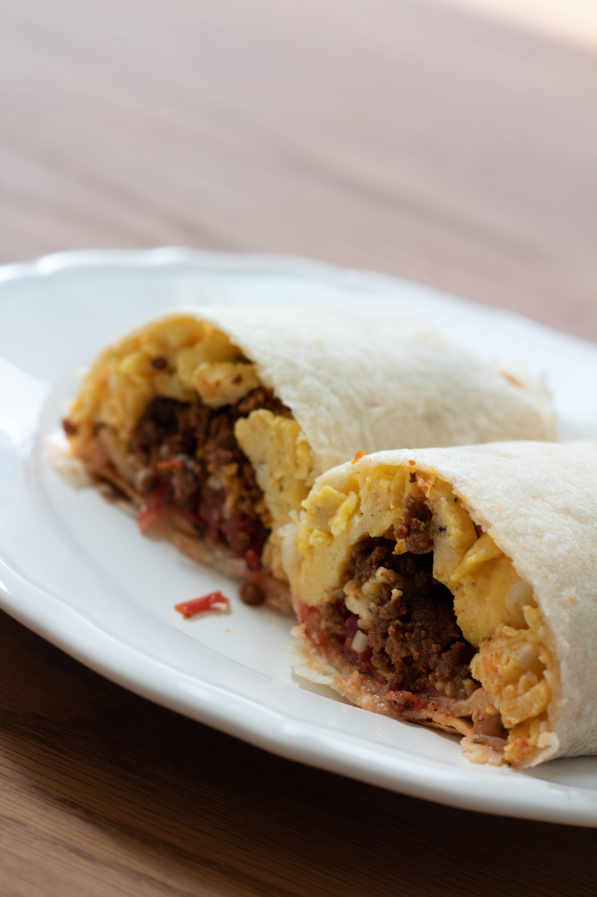

Southwestern Breakfast Burrito

Ingredients
- 12 large eggs
- 2/3 cup milk
- 1/2 teaspoon
- 2 tablespoons butter
- 1 pound bulk pork sausage
- 2 tablespoons minced garlic
- 1/2 red onion, diced
- 1 tomato, diced
- 1/4 cup chopped fresh cilantro
- 1 (3.5 ounce) can diced jalepenos (Optional)
- 1 (1 ounce) package taco seasoning
- 11/1 cups shredded Cheddat cheese
- 20 (6 inch) flour tortillas
Directions